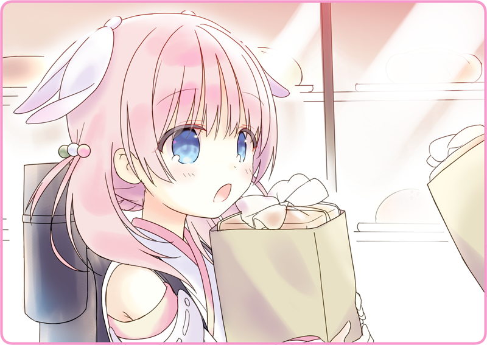

「灰桜は、パン屋で働いているの？」
素朴な疑問を口にすると、きょとんとした声が帰ってきた。
「いや、あんぱんを売っていたから」
なにやら深い事情があるらしい。
ボクは居住まいを正すと、彼女の声に耳を傾けようとした。
彼女がここにいたるまで、それはそれは大きな波乱があったのだろうか……？
真剣な様子で視線を向けてくる。
「うっかり全部食べちゃったとか？」
「えっと……うっかりパンを落としちゃったとか？」
「うっかりお金を落としたとか」
ぴくっと体を震わせる。
どうやら図星だったらしい。
「なるほど、それでアルバイトして、パンを買うお金を捻出していたと」
「それなら、大成功だね。休憩はこの辺にしておこう」
「バイト代のパンを貰いにいかないと」
２人して立ち上がる。
＊ ＊ ＊
桜並木の先、坂道をすこしくだった先。
そこに小さなパン屋さんがのぼりを揚げていた。

灰桜はパン屋さんの前で、困惑した声を上げる。
「頑張ってくれたからねえ、おまけしておくよ」
朗らかな声を返すのは、初老の女店主だ。
食パン２本の入った紙袋が合計２袋。
だいたい１本は３斤なので、合計１２斤の食パンをもらった格好だ。
「貰っておきなよ。ほら、半分持つよ」
「灰桜が務めている喫茶店、興味があるんだ。案内してくれるかい？」

 「違うのです、話せば長くなりますが……」
「違うのです、話せば長くなりますが……」